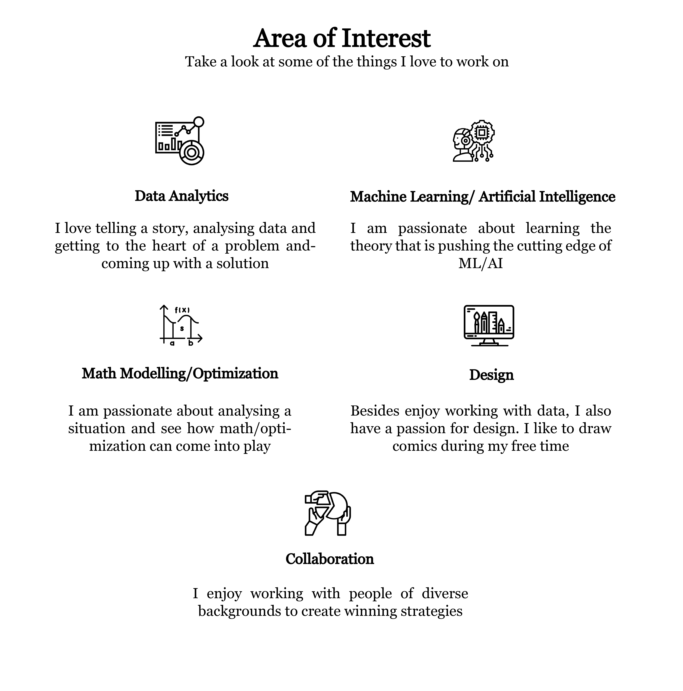
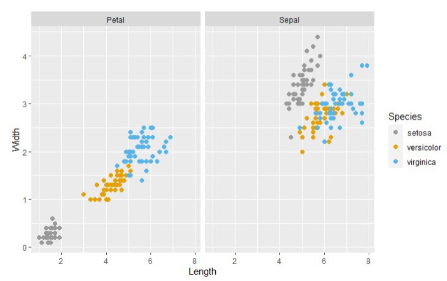
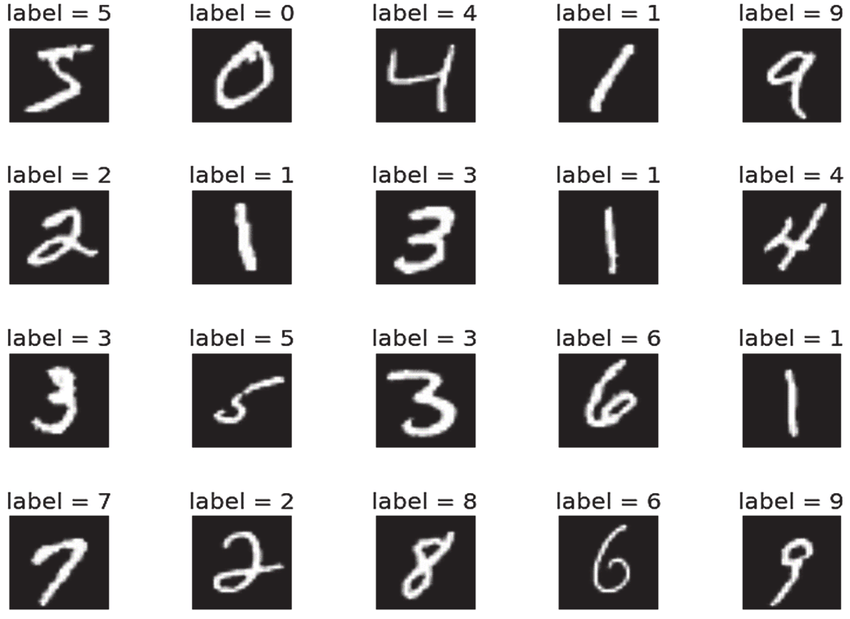
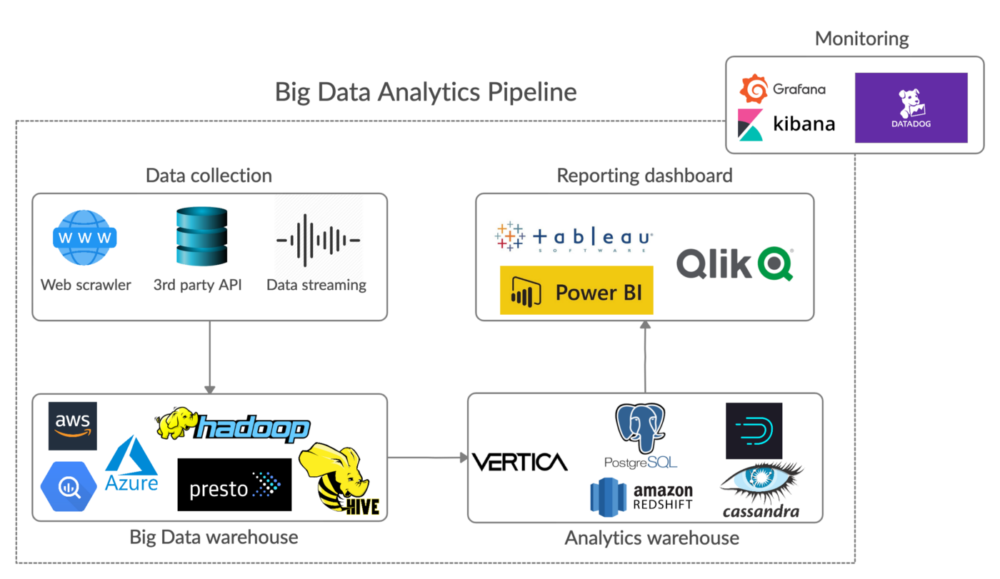
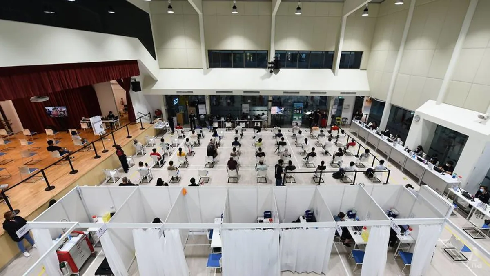
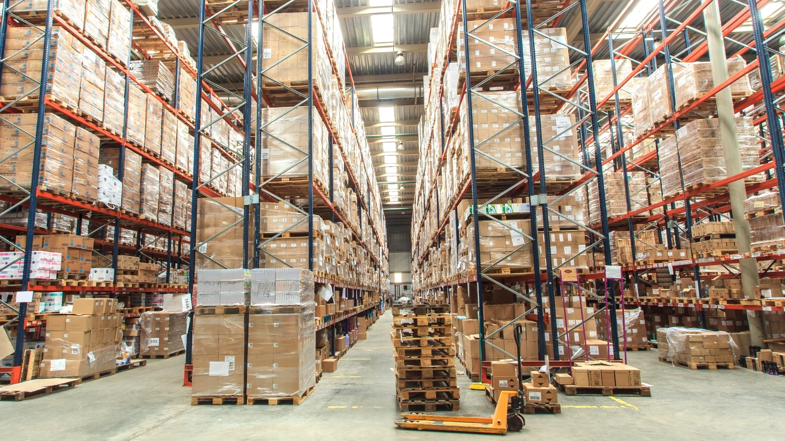

chiayuying
Hi, my name is Yu Ying, an aspiring data analyst/scientist pursuing a bachelor's degree in Engineering Systems & Design with dual specialization in Business Analytics and Supply Chain logistics at Singapore University of Technology and Design (SUTD).
Since young, I have always enjoyed solving puzzles/riddles. To me, huge datasets are like big puzzle pieces that I want to solve. I find it very rewarding and meaningful to explore different techniques to extract relevant information from huge datasets to perform analysis, and thereafter potentially improve lives across a wide variety of sectors.

my projects
In my course of study, I have aquired hands-on experience in data analytics, statistical machine learning, simulation & modelling, business process automation and big data analytics pipeline. I am experienced in R programming (Tidyverse, CARET, Keras, RShiny), SQL, Python (Pandas, Sci-Kit Learn), Javascript, Qlikview, Tableu, Power BI, QGIS, Simio and JaamSim. Besides being equipped with the necessary technical skills, i am also a self-motivated individual, a team player and a problem solver.
For this project, my team and I are currently working with Singapore Airlines Engineering Company (SIAEC) on a smart inventory management and optimization project. Despite efforts by SIAEC in deploying inventory management practices, the company still overprovisions spare parts, incurring unnecessary capital. The underlying causes of this overprovisioning include inefficient inventory management practices, forecasting techniques and inflexible interface for managing inventory. Our project thus aims to create a web-based application with dynamic features such as having variable inputs, scenario-based optimization and data visualization to help manage and optimize spare parts in hopes of a more user-friendly and cost-saving alternative for the company to fit into their current workflow

For this mini project, I was given a problem scenario and I had to write an algorithm to solve the problem and to document my methods used in presentation slides within 2 days. The scenario given to me was to create a tool to help a gardener to quickly retrieve records of the 10 most similar iris flowers in his garden for any input iris flower. The methods that I have adopted are mainly to: check the quality of data, conduct data visualization (before analysis), Use of similarity measures (eg.euclidean distance) and lastly create visualizations for the output results.

For this project, we were tasked to plan a class session to teach our peers on any machine learning algorithm of our choice. Together with my teammate, we have chosen XGboost to be the machine learning elgorithm that we will be teaching the class. Besides backtracking the math concepts behind XGBoost, we have also implemented the XGBoost algorithm on the MNIST database. After fine-tuning our algorithm, we have managed to attain a high prediction accurcy of 97.81%
Through this coaching project, I have also learned alot of different machine learning algorithms from other teams. Some of which inlcudes: Reinforement learning, Recurrent Neural Network, Topic Modelling, etc.
For this project, my team and I have conducted a research study on how personality drives social media usage & its subsequent effects on loneliness. From our research from literature reviews, we have conducted concept explication and formulated our hypotheses. In a short period of 3 months, from building a survey questionnaire, to data collection, to data cleaning, to data analysis (mediating analysis), we have sucessfully gained some insights and answers to our hypotheses that we have formulated.

For this project, my team and I have performed sentiment analysis on tweets relating to weather using machine learning in R. I have performed data cleaning and data pre-processing using R (Tidyverse & textclean library). I have also collaborated with my teammates on the development and implementation of machine learning systems in R. Some of the algorithms that we have tried include: Classification Trees, Random Forest, Naive Bayes and Support Vector Classification. We have successfully attained a high prediction accuracy of 87.5% with the implementation of our final (random forest) algorithm

I have had the opportunity to intern in the Business Solutions team in OCBC, which has allowed me to gain exposure in business automation process, some of which includes the automation of daily tasks using Python and VBA macros to help to increase work efficiency. I was also involved in the migration of data from the legacy Microsoft Access to QLikview Program. For this data migration project, I have decoded over 50 SQL queries in MS Access, transferred and optimized the code logic to Qlikview, and have significantly reduced the time taken by end-users to perform daily tasks. On top of this, I have also designed an automated interative dashboard in Qlikview for the viewing and generation of daily reports.

For this project, my team and I have conducted a simulation study on vaccination centres using Simio. We have specifically chosen Toa Poyah vaccination centre for our simulation building and analysis. We conducted output analysis by investigating the average waiting times of patients in the system and the utilization state of different stations and how it changes with the number of servers in each stations in the system.

For this project, my team and I have worked with Singapore Airlines Engineering Company(SIAEC), to help them to develop an optimized Inventory model. Besides performing data wrangling and transformation on huge datasets (million rows of data) using R (Tidyverse library), I have also conducted pre-analysis of data and data visualization using R (ggplot2 library). Thereafter, my team and I have then formulated and proposed an optimized inventory model, coded in R and delivered to client.
Our team has successfully contributed some useful inventory management insights to our client.

For this project, my team and I have worked with Integrated Systems & Consultancy (IDCS), to conduct changepoint analysis and predictive analysis on bread sales data. For this project, I have used SQL for data cleaning, R for analysis (changepoint & prophet library) and data visualization (ggplot2 library).
I have also gained liaison skills as I had to liased regularly with the client to gather their feedbacks on my team's proposed methods.